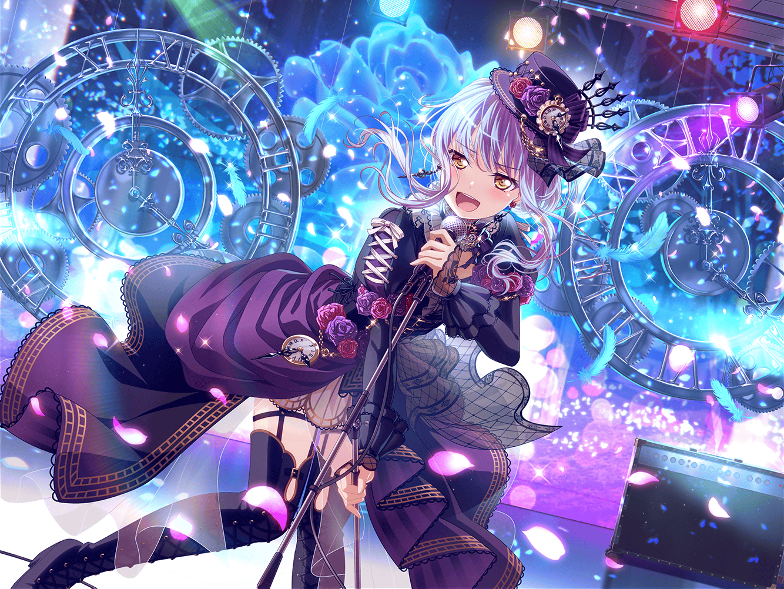

CiRCLE カフェテリア
友希那
練習まで、まだ少し時間があるわね。
でも、入り口でぼんやりするわけにもいかないし……
リサ
友希那ー！ おーい！ ゆ〜きな〜〜〜！
友希那
！ ……リサ。
またカフェに寄っていたのね
友希那
それに、まりなさんと{{userName}}さんも。
みんなで何を話していたの？
まりな
ああ、えーっと〜……最近のRoseliaは、
さらに音が良くなったよねって話してたんだ！
繋がりが強くなったって感じでさ
リサ
またまた〜！ まりなさんってば褒め上手なんだから……
友希那
それは当然よ
リサ
ゆ、友希那？
友希那
……まりなさん、{{userName}}さん。
少し話を聞いてくれるかしら？
友希那
私達Roseliaは、少し前まで……
すれ違ってしまっていたの。原因はそれぞれにあったけれど、
何よりも私が未熟で……焦っていたからなのだと思うわ
友希那
SMSでの失敗を気にするあまり、空回って……
決していいと言えない状態だったわ
友希那
私はきっと、甘えていたのね。
あこが練習から飛び出してしまった時も、心のどこかで
すぐに戻ってくると……
友希那
いいえ。無意識の内に、
『リサがなんとかしてくれる』と感じていたのかもしれないわ
リサ
友希那……
友希那
メンバーには、本当に申し訳なかったと思ってるわ
友希那
でも私は、そのすれ違いがあったからこそ、
今のRoseliaになれたのだと思っているの
友希那
Roseliaにとってあのすれ違いは必要だった。
起こるべきものだったのよ
友希那
……うまく、伝わっているかしら？
まりな・リサ
……
友希那
な、何？ みんなどうして、黙って私を見ているの？
まりな
ごめんごめん！ 友希那ちゃん、本当に変わったな〜と思って、
ちょっと驚いちゃって
まりな
前から神秘的で素敵だなって思ってたけど……
今の友希那ちゃんも、すごくいいと思うな
友希那
と、突然何を言い出すの？
リサ
まりなさんもそう思う？
実は、アタシもそう思ってたんだよね〜！
友希那
ちょっとリサ。
{{userName}}さんも、からかわないでちょうだい
まりな
ふふっ、照れてる照れてる。でも良かったー。
最初はどうなるかと思ったけど……
Roselia、これからさらに伸びそうだね
友希那
……ええ、そうね。
さらに成長すると約束するわ
友希那
そろそろ時間ね。リサ、練習に行きましょう
リサ
オッケー！ さーて、練習するぞーっ！
まりなさん、{{userName}}さん。まったねー！